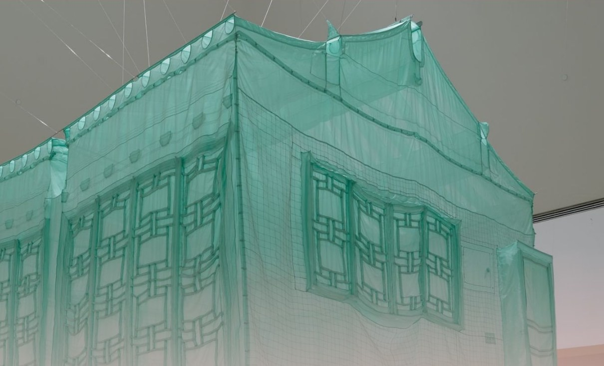
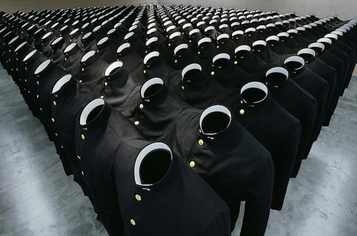

Carrying Home
Do Ho Suh sews full-size copies of the houses he has lived in. They fold into a suitcase and go wherever he goes.
See all worksEvery door handle, light switch, and radiator is there, sewn in fabric thin enough to see through.
Born in Seoul in 1962, Do Ho Suh trained as a painter before a sewing class in Rhode Island turned him toward sculpture. Since then, every place he has lived has become a piece of his work.
When a show closes, the walls fold flat. The house is packed, shipped, and set up again somewhere new, the same way he has moved his own life.
Three works to start
Hover over an image, or tap it, to read about the work.
-

01 Hub works 2015–2016 · Polyester fabric, stainless steel -

02 Fallen Star 2012 · Mixed media, UC San Diego -

03 High School Uni-Form 1997 · Fabric, plastic, stainless steel, casters
Seoul, Providence, New Haven, New York, London.
- 1962Seoul
- 1991Providence
- 1997New Haven
- 1997New York
- 2010London

About Do Ho Suh
He grew up in a traditional Korean house built by his father, the ink painter Suh Se-ok. That house was the first one he rebuilt in silk.
He represented Korea at the 2001 Venice Biennale and has shown at Tate Modern, the Whitney, and the Smithsonian. He lives in London.
Read his story